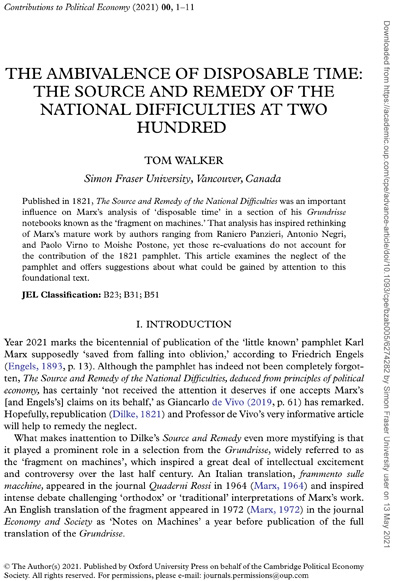
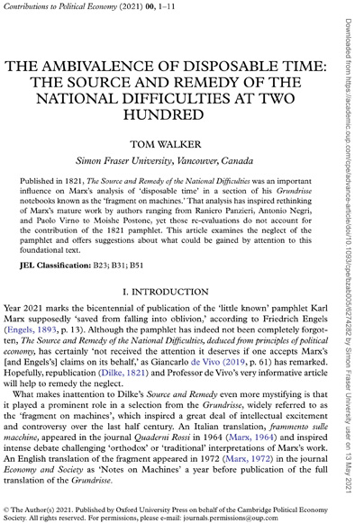

Marx's Fetters: a remedial reading

‘These inherent limits necessarily coincide with the nature of capital, with its essential determinants. These necessary limits are:
‘1. necessary labour as limit to the exchange-value of living labour-power, of the wages of the industrial population;
‘2. surplus value as limit to surplus labour-time; and, in relation to relative surplus labour-time, as limit to the development of the productive forces;
‘3. what is the same thing, the transformation into money, into exchangevalue, as such, as a limit to production; or: exchange based on value, or value based on exchange, as limit to production. This is again
‘4. the same thing as restriction of the production of use-values by exchange-value; or: the fact that real wealth must take on a specific form distinct from itself, absolutely not identical with it, in order to become an object of production at all.’
It "would require a book," Nicolaus then observed, to present "a proper analysis of the implications of these rather cryptic theses." In lieu of that analysis, he offered a synopsis that "these four ‘limits’ represent no more than different aspects of the contradiction between ‘forces of production’ and ‘social relations of production’."

One could go on and on... it would require a book. Although Grundrisse may be seen as "one long extended commentary" on the contradiction between the forces and relations of production, there are shorter passages that are particularly germaine to the analysis of the "rather cryptic theses" at the core of that contradiction. The condensed version -- consisting of pages 397-423, 608-610, and 704-711 -- is less than 5% of the total number of pages. It is bracketed by 'quotations' from The Source and Remedy of the National Difficulties, on page 397:

‘Wealth is disposable time and nothing more. ... If the whole labour of a country were sufficient only to raise the support of the whole population, there would be no surplus labour, consequently nothing that can be allowed to accumulate as capital . . . Truly wealthy a nation, if there is no interest or if the working day is 6 hours rather than 12 . . . Whatever may be due to the capitalist, he can only receive the surplus labour of the labourer; for the labourer must live.’ (The Source and Remedy of the National Difficulties.
And on page 709:
‘If the entire labour of a country were sufficient only to raise the support of the whole population, there would be no surplus labour, consequently nothing that could be allowed to accumulate as capital. If in one year the people raises enough for the support of two years, one year’s consumption must perish, or for one year men must cease from productive labour. But the possessors of [the] surplus produce or capital . . . employ people upon something not directly and immediately productive, e.g. in the erection of machinery. So it goes on.’ (The Source and Remedy ofthe National Difficulties, p. 4.)
The first quotation contains a montage of paraphrases from pages 6, 4, back to 6, and on to 22 of The Source and Remedy. The quotation on page 709 sticks with page 4 as Marx had already quoted from page 6 three pages earlier.
The bracketing quotations come before and after a pair of remarkable paragraphs by Marx. The initial one asserts that "[t]he whole development of wealth rests on the creation of disposable time" and goes on to explain that "[i]n production resting on capital, the existence of necessary labour time is conditional on the creation of superfluous labour time." The paragraph bracketed by the final quote presents an intense analysis of disposable time in which the English term, 'disposable time', appears seven times in Marx's German manuscript, along with three instances of 'surplus labour' in English and two phrases, 'instrumental in creating the means of social disposable time' and 'to convert it into surplus labour.'
Seine Tendenz aber immer, einerseits disposable time zu schaffen, andrerseits to convert it into surplus labour.
Once the mass of workers have appropriated their own surplus labour, Marx argued in a passage echoing his earlier assertion that development of wealth rested "on the creation of disposable time":
...the development of the power of social production will grow so rapidly that, even though production is now calculated for the wealth of all, disposable time will grow for all. For real wealth is the developed productive power of all individuals. The measure of wealth is then not any longer, in any way, labour time, but rather disposable time.
Real wealth, then, is "the developed productive power of all individuals," which "rests on the creation of disposable time." Disposable time thus is integral to the development of the productive forces and the contradiction with the productive relations rests with capital's tendency to not only create disposable time but to convert as much of it as it can it into surplus labour.
Forces of production and social relations - two different sides of the development of the social individual - appear to capital as mere means, and are merely means for it to produce on its limited foundation. In fact, however, they are the material conditions to blow this foundation sky-high.
What comes after "the material conditions to blow this foundation sky-high"? Four out of five authors who quote that incendiary passage do not mention disposable time. Yet that was Marx's follow-up in yet another paraphrase from The Source and Remedy: "'Wealth is not command over surplus labour time’ (real wealth), ‘but rather, disposable time outside that needed in direct production, for every individual and the whole society.’"
Marx was quite explicit and repetitive about the relationship between disposable time and the productive forces. Moishe Postone almost got it when he described disposable time as, for Marx, a characteristic of "a possible post capitalist society." It is indeed that but much more. Disposable time is also the medium through which the productive forces are developed in capital.
The infamous 'fetters' on the development of the productive forces -- those four "necessary limits" to the development of the productive forces quoted at the beginning of this essay -- arise from the compulsion of capital to convert disposable time into surplus labour time. The four limits are, in fact a single, unfolding contradiction that culminates in the non-identity of real wealth and value, use-value and exchange-value: "the fact that real wealth must take on a specific form distinct from itself, absolutely not identical with it, in order to become an object of production at all."